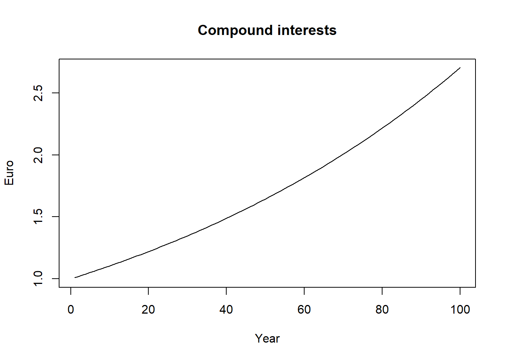
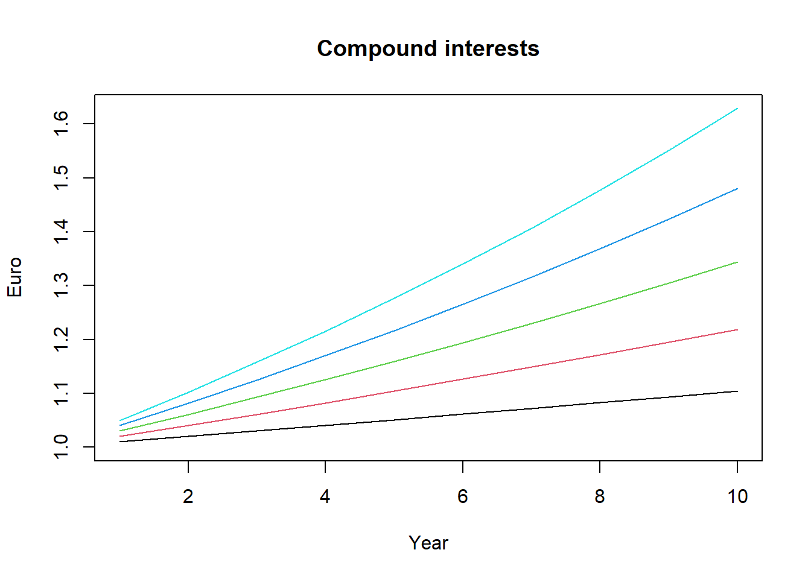

Chapter 9 Exercises
- We are given the following set of numbers: \(6, 2 , 8, 7, 5\). Transform the set into standard scores and check that mean and standard deviation of the transformed set are respectively 0 and 1.
## [1] 1.387779e-16## [1] 1- Let us assume that the random variable \(X\) is a normally distributed random variable with mean (\(\mu\)) equal to 5 and population standard deviation (\(\sigma\)) equal to 4. In short, \(Normal ~ (5,4)\). Calculate the probabilities that our random variable \(X\) assume a value smaller than 6, \(P(X \leq 6)\), using the table of the standard normal probabilities or R (much better!).
If we did not have R available we would have to find the \(z\) score corresponding to the value of interest, 6 in this case, and look in the table of standard normal probabilities (the area below the curve) the probability that our random variable assumes a value smaller than that.8
## [1] 0.25\[z = \frac{6 - 5}{4} = 0.25\]
Our \(z\) value of interest is 0.25. The probability that the variable \(X\) takes on a value less than 6 is given by the area under the normal curve to the left of \(z = 0.25\). This value is equal to:
## [1] 59.87063We can achieve the same result by using the lower.tail = FALSE option. In this case we get the white area in the graph below and will have to subtract this quantity from 1 or 100%, i.e. the whole area under the curve.
## [1] 59.87063In the graph below, the area marked in green indicates the probability that the independent variable \(X\) takes on a value less than 6 given mean and population standard deviation of 5 and 4, respectively.

If we have software at our disposal we do not have to use tables. In this case there is no need to calculate the \(z\) score. The result (and the graph) will be exactly the same with the important difference that now the values reported in the horizontal axis will be the values of \(X\) and not the standardized scores.
## [1] 59.87063
The test scores for a class of students (this is the population) are normally distributed with mean (\(\mu\)) equal to 75 points and standard deviation (\(\sigma\)) equal to 10 points. What is the probability that a students scores above 80 points?
Calculate the following probabilities:
- Given \(X \sim Normal(3,4)\), find \(P(X \leq 1)\)
- Given \(X \sim Normal(4,0)\), find \(P(2 < X \leq 6)\)
Since the normal distribution is continuous, \(P(Z < z) = P(Z \leq z)\).↩︎